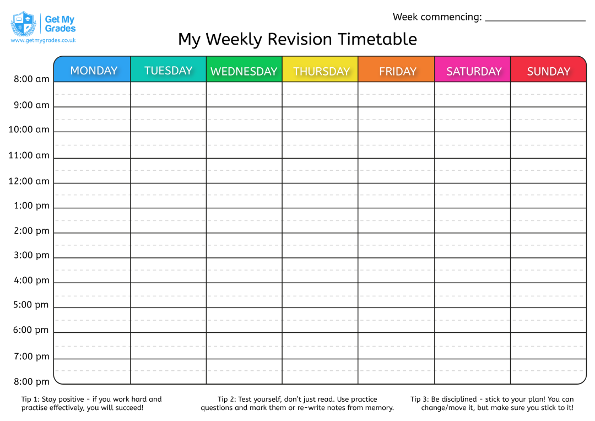

How To Revise
Knowing how to revise is just as important as knowing what to revise. There isn't one "perfect" way to revise. Everyone learns differently. Below, you can find a range of revision techniques, tips for making revision more effective, advice on creating a revision timetable, and common mistakes to avoid. Hopefully, these resources will help you find the methods that work best for you!
At any time, you can click the question mark icon in the banner to return to the top of this page.
Quick links:
Revision Methods
Below, you can find a wide variety of potential revision methods. Each is followed by a brief explaination and what that method is best used for. You can use all or none of these methods. It is simply to provide some guidance if you are unsure where to start! There is many ways to revise that is not staring blankly at a textbook or rewriting notes. I put all revision methods onto a separate page to make them easier to access for you!
Revision Tips
Below, you can find a few tips to ensure you get the most out of your revision!
· Put your phone in another room to avoid distractions, or use a dedicated website such as:
· Swap sugary snacks for fruit to keep your brain active.
· Never pull all-nighters right before an exam. Sleep is more important than the last minute revision.
· Clear everything from your desk other than your study materials.
· Study in a library or coffee shop where everyone else is working, which will force you to mimic them.
· Schedule specific study blocks such as "4pm to 5pm: write a Macbeth Essay" rather than just "study English Lit".
· The mark scheme is your best friend. It shows exactly how the examiners want the questions to be answered. If you got a question wrong, study the mark scheme to see where you went wrong and why.
· The specification is also your best friend. It contains all the information you could be tested on, and so, it contains all the information you need to know. If it's not on the specification, you don't need to know it! You can find all individual subejct specifications under the subjects in the Years 9-13 buttons on the homepage.
Common Revision Mistakes
Below, you can find a common mistakes students often make when revising and how to ensure you don't do the same thing!
Solely rereading notes as "revison":
· Just reading text or highlighting pages does not help your brain store information long term. There are many more beneficial methods of revising. These can be found in the "Revision Methods" section of this page, or here!
Not Testing Yourself
· Active recall involves attempting to recall facts or information from your memory. This is much more beneficial for learning content than rereading the same notes a hundred times.
Avoiding Difficult Topics:
· Revising subjects and topics you find easy gives a false sense of confidence and leaves gaps in your knowledge. Try alternating between topics you find easy and difficult to maintain your motivation, then slowly cut out the "easier" topics.
Cramming:
· Trying to learn everything right before a deadline can cause high stress and poor memory retention. You are highly unlikely to remember all the information you tried to cram the night before the exam.
Ignoring timed conditions:
· When you're confident in the content and identifying gaps using past papers, don't ignore the timing of the paper. If you will have 1 hour and 30 mins, complete as much of the paper as you can that time. Doing practice papers without a timer is okay at first, but using a timer can help to prepare you for the time pressure of the real exam.
"Pretty" Notes:
· Some people focus too much on making their notes "pretty" and "aesthetic". There isn't a problem with wanting neat, colourful notes, but taking 30 minutes to write a title is a waste of your time. By all means, make easy to understand notes, but don't spend hours on the colours and design. The information is much more important.
How to Create a Revision Timetable

Staying Motivated
Staying motivated can be one of the hardest parts of revision. It's completely normal to have days where you don't feel like studying. Motivation was something I personally struggled with sometimes while doing my GCSEs. That is why I have included it on this website to help others in the same position. Below are some tips to help you stay motivated:
· Set realistic goals:
Large tasks can feel overwhelming. Instead, break your revision into smaller chunks. Instead of "revise Biology", try "10 minutes of Cells flashcards" or "answer 5 exam questions". The hardest part is starting. Once you've started, it will be easier to continue.
· Track your progress:
Tracking your revision either in a diary or using apps like Study Bunny can be motivating as it shows you how much you've really achieved. This was one of my main motivations as I enjoyed adding to my log on Study Bunny.
· Reward yourself:
Give yourself something to look forward to after finishing a revision session. Some examples could be a snack, your phone, watching a show or gaming.
· Change things up:
Doing the same thing every day can become boring fast. Instead, try using different revision tactics such as flashcards, mindmaps or past papers.
· Revise with other people (if it helps):
Revising in a coffee shop or library where other people are working might motivate you to mimic or match them. Alternatively, you could revise with friends. This could be helpful as you can quiz each other, complete questions together and ask questions. However, if working with others distracts you, it's perfectly fine to revise alone.
· Listen to Music:
If it helps, listen to music! Some people find music distracting, but others need it to focus. Below, I have added links to an instrumental playlist I found on Spotify and my Chase Atlantic playlist. Feel free to use either!
· Don't Compare Yourself:
Everyone learns at different paces and in different ways. Don't compare yourself to others. Do what works for you!
· Be Kind to Yourself:
Nobody revises perfectly everday. Missing one day doesn't mean you have failed. Simply start again with your next session instead of giving up.
Choosing the Best Method for You
Everyone learns in different ways and different revision methods will work for them! You can use as many or as little as you like. My personal favourite methods were flashcards, practice questions and past papers.
· If you struggle to stay focused for long periods, try the Pomodoro Technique.
· If you find it difficult to remember facts, try Flashcards and Active Recall.
· If you forget things quickly after revising, try Spaced Repetition.
· If you learn best by writing and rewriting things down, try Blurting.
· If you are a visual learner or like colours and diagrams, try Mindmaps.
· If you learn by listening, try the Feynman Technique or watching videos.
· If you feel overwhelmed by large topics, try Mindmaps or Topic Checklists.
· If you struggle with exam questions and exam techniques, try past papers.
· If you keep making the same mistakes, write down where you went wrong and why. Keep referring back to it or keep redoing the question you got wrong.
Useful Resources Bank
Below, you can find links to helpful websites across A-level and GCSE. For resources relating to specific subjects, please select that subject under your year group!
FAQ!
Below, you can find a few frequently asked questions about revision and their answers!
How long should I revise for?
This depends on the individual. Some people can revise for 4 hours straight, while others can only manage 30 minutes. The key is to find what works for you. If you are unsure, try different lengths of time and see what works best for you.
How do I know if I'm revising effectively?
If you are able to recall information without looking at your notes, then you are revising effectively. If you are passively rereading notes or struggle to remember information, you should try different revision methods. You can find a range of revision methods in the "Revision Methods" section of this page, or here!
When should I start revising?
Technically, the earlier you start, the better. However, it is important to not burn yourself out. If you start revising too early, you may lose motivation. Personally, I started consistently revising for GCSEs in Februrary.
What if I have a question that hasn't been answered here?
Fill out this anonymous Microsoft Form with any other questions you have!
I will try to answer as many questions as I can, to the best of my ability, and add them to this section of RevisionCat!